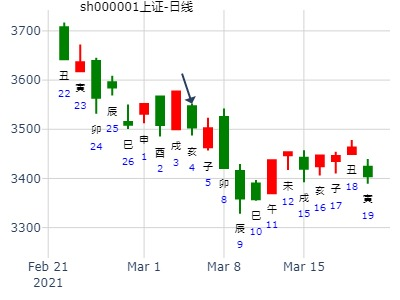

512660军工ETF在2025年如何？-风生水起
时间: 2025-01-05 13时27分
干支: 甲辰年丁丑月甲戌日 (旬空: 申酉 )
遁静卦
玄武 ▅▅▅▅▅ 父母戌土
白虎 ▅▅▅▅▅ 兄弟申金 应
腾蛇 ▅▅▅▅▅ 官鬼午火
勾陈 ▅▅▅▅▅ 兄弟申金
朱雀 妻财寅木▅▅ ▅▅ 官鬼午火 世
青龙 子孙子水▅▅ ▅▅ 父母辰土
中证1000未来六个月走势-杜拿提供
时间: 2025-01-05 13时58分
干支: 甲辰年丁丑月甲戌日 (旬空: 申酉 )
遁静卦
玄武 ▅▅▅▅▅ 父母戌土
白虎 ▅▅▅▅▅ 兄弟申金 应
腾蛇 ▅▅▅▅▅ 官鬼午火
勾陈 ▅▅▅▅▅ 兄弟申金
朱雀 妻财寅木▅▅ ▅▅ 官鬼午火 世
青龙 子孙子水▅▅ ▅▅ 父母辰土
测明天上海股票大盘走向？ 起卦方式：ww.iqing.net线上排盘系统
公历时间：2007年3月21日19时12分 星期三
干支：丁亥年 癸卯月 甲寅日 甲戌时 (旬空：子丑)
乾宫：天山遁
玄武 ▅▅▅▅▅ 父母壬戌土
白虎 ▅▅▅▅▅ 兄弟壬申金 应
螣蛇 ▅▅▅▅▅ 官鬼壬午火
勾陈 ▅▅▅▅▅ 兄弟丙申金
朱雀 妻财甲寅木 ▅▅ ▅▅ 官鬼丙午火 世
青龙 子孙甲子水 ▅▅ ▅▅ 父母丙辰土
卯月卯日反而小涨。辰日压制子孙子水，下影线。
占事：600166未来二周涨跌趋势？ 钱币卦
公历起卦时间：2015年3月6日22时59分 (在线摇卦)
干支：乙未年 己卯月 辛巳日 己亥时 （日空：申酉）
乾宫：天山遁
六神 伏神 本 卦
腾蛇 父母壬戌土 ▅▅▅▅▅
勾陈 兄弟壬申金 ▅▅▅▅▅ 应
朱雀 官鬼壬午火 ▅▅▅▅▅
青龙 兄弟丙申金 ▅▅▅▅▅
玄武 妻财甲寅木 官鬼丙午火 ▅▅ ▅▅ 世
白虎 子孙甲子水 父母丙辰土 ▅▅ ▅▅
招财公主测600166未来2周走势-硬币卦221111
伏神逢冲暗动，申日大涨。子日本该冲飞露伏涨，但动态旬空为午未？
主帖标题: 请老师们看看这三类卦共同点。
梅花小孩 发表于 2020-3-20 21:37
还需附录起卦时间作为时空对照
乾宫：天山遁
六神 伏 神 【本 卦】
白虎 ▄▄▄▄▄ 父母壬戌土
螣蛇 ▄▄▄▄▄ 兄弟壬申金 应
勾陈 ▄▄▄▄▄ 官鬼壬午火
朱雀 ▄▄▄▄▄ 兄弟丙申金
青龙 妻财甲寅木 ▄▄ ▄▄ 官鬼丙午火 世
玄武 子孙甲子水 ▄▄ ▄▄ 父母丙辰土
亥月，癸丑日，上证涨跌
未月，乙亥日，上证涨跌
卯月，壬戌日，上证涨跌
都是周卦
老师方便时断一下。
请老师在方便时断断以下卦
亥月，癸丑日，上证一周涨跌
乾宫：天山遁
六神 伏 神 【本 卦】
白虎 ▄▄▄▄▄ 父母壬戌土
螣蛇 ▄▄▄▄▄ 兄弟壬申金 应
勾陈 ▄▄▄▄▄ 官鬼壬午火
朱雀 ▄▄▄▄▄ 兄弟丙申金
青龙 妻财甲寅木 ▄▄ ▄▄ 官鬼丙午火 世
玄武 子孙甲子水 ▄▄ ▄▄ 父母丙辰土
未月，乙亥日，上证一周涨跌
乾宫：天山遁
六神 伏 神 【本 卦】
白虎 ▄▄▄▄▄ 父母壬戌土
螣蛇 ▄▄▄▄▄ 兄弟壬申金 应
勾陈 ▄▄▄▄▄ 官鬼壬午火
朱雀 ▄▄▄▄▄ 兄弟丙申金
青龙 妻财甲寅木 ▄▄ ▄▄ 官鬼丙午火 世
玄武 子孙甲子水 ▄▄ ▄▄ 父母丙辰土
卯月，壬戌日，上证一周涨跌
乾宫：天山遁
六神 伏 神 【本 卦】
白虎 ▄▄▄▄▄ 父母壬戌土
螣蛇 ▄▄▄▄▄ 兄弟壬申金 应
勾陈 ▄▄▄▄▄ 官鬼壬午火
朱雀 ▄▄▄▄▄ 兄弟丙申金
青龙 妻财甲寅木 ▄▄ ▄▄ 官鬼丙午火 世
玄武 子孙甲子水 ▄▄ ▄▄ 父母丙辰土
试测上证3.5收盘百位是几？现在3503.49
出生：2021 年 性别：男 占事：几
排卦：元亨利贞网六爻在线排盘系统
公历起卦时间：2021年3月4日22时36分 (电脑自动)
干支：辛丑年 庚寅月 辛亥日 己亥时 （日空：寅卯）
乾宫：天山遁
六神 伏神 本 卦
螣蛇 父母壬戌土 ▅▅▅▅▅
勾陈 兄弟壬申金 ▅▅▅▅▅ 应
朱雀 官鬼壬午火 ▅▅▅▅▅
青龙 兄弟丙申金 ▅▅▅▅▅
玄武 妻财甲寅木 官鬼丙午火 ▅▅ ▅▅ 世
白虎 子孙甲子水 父母丙辰土 ▅▅ ▅▅
寅月亥日本该涨，可惜旬空？或是钥语刁钻。

主题：20070514上证当日
丁亥 乙巳 戊申 丙辰 (日空:寅卯 时空:子丑)
丁亥年三月廿八(2007/05/14 08:52:40)
天山遁
朱雀 父母戌土 ／
青龙 兄弟申金 ／ 应
玄武 官鬼午火 ／
白虎 兄弟申金 ／ 妻财寅木：
腾蛇 官鬼午火 ∥ 乾子孙子水：
勾陈 父母辰土 ∥
财爻不现鬼持世，跌。但财伏世下，伏生世何解？？？
伏神旬空逢冲暗动。申日涨。
主帖标题: 金眼牛5.22--26SZZS
占事：5月22-26日大盘涨跌？--金眼牛
公历起卦时间：2017年5月19日16时48分 (手工指定)
干支：丁酉年乙巳月丙午日丙申时（日空：寅卯）
神煞：驿马－申 桃花－卯 日禄－巳 贵人－酉，亥
乾宫：天山遁
青龙 父母壬戌土 ▅▅▅▅▅
玄武 兄弟壬申金 ▅▅▅▅▅ 应
白虎 官鬼壬午火 ▅▅▅▅▅
腾蛇 兄弟丙申金 ▅▅▅▅▅
勾陈 妻财甲寅木 官鬼丙午火 ▅▅ ▅▅ 世
朱雀 子孙甲子水 父母丙辰土 ▅▅ ▅▅
子日冲飞露伏，哪怕伏神旬空，也涨、
主帖标题: 本周上证指数资金面变坏冲高回落，小阳线报收，下周如何演变看看这个怎样
占事：300534陇神戌发下午跟明天涨跌
排卦：元亨利贞网六爻在线排盘系统
公历起卦时间：2017年5月22日12时1分 (电脑自动)
干支：丁酉年 乙巳月 己酉日 庚午时 （日空：寅卯）
乾宫：天山遁
勾陈 父母壬戌土 ▅▅▅▅▅
朱雀 兄弟壬申金 ▅▅▅▅▅ 应
青龙 官鬼壬午火 ▅▅▅▅▅
玄武 兄弟丙申金 ▅▅▅▅▅
白虎 妻财甲寅木 官鬼丙午火 ▅▅ ▅▅ 世
腾蛇 子孙甲子水 父母丙辰土 ▅▅ ▅▅
主帖标题: 5.19是涨？跌？幅度如何？（6）
时间: 2021-05-18
干支: 辛丑年癸巳月丙寅日 (旬空: 戌亥 )
002413：收阳，中阳 （参考自负）
乾宫：天山遁
六神 伏神 本 卦
青龙 父母壬戌土 ▅▅▅▅▅
玄武 兄弟壬申金 ▅▅▅▅▅ 应
白虎 官鬼壬午火 ▅▅▅▅▅
螣蛇 兄弟丙申金 ▅▅▅▅▅
勾陈 妻财甲寅木 官鬼丙午火 ▅▅ ▅▅ 世
朱雀 子孙甲子水 父母丙辰土 ▅▅ ▅▅
300491：收阴，幅度小 （参考自负）
巽宫：火雷噬嗑
六神 伏神 本 卦
青龙 子孙己巳火 ▅▅▅▅▅
玄武 妻财己未土 ▅▅ ▅▅ 世
白虎 官鬼己酉金 ▅▅▅▅▅
螣蛇 妻财庚辰土 ▅▅ ▅▅
勾陈 兄弟庚寅木 ▅▅ ▅▅ 应
朱雀 父母庚子水 ▅▅▅▅▅
出生年：1975年 性别：男 占事: 6.20深证大盘走势
起卦方式：手动摇卦 周易天地六爻线上排盘系统
公历时间：2011年6月20日9时5分
干支：辛卯年 甲午月 丙午日 癸巳时
旬空：午未 辰巳 寅卯 午未
乾宫：天山遁
六神 伏 神 【本 卦】
青龙 ▄▄▄▄▄ 父母壬戌土
玄武 ▄▄▄▄▄ 兄弟壬申金 应
白虎 ▄▄▄▄▄ 官鬼壬午火
螣蛇 ▄▄▄▄▄ 兄弟丙申金
勾陈 妻财甲寅木 ▄▄ ▄▄ 官鬼丙午火 世
朱雀 子孙甲子水 ▄▄ ▄▄ 父母丙辰土

七月上证-金玉堂铜钱卦
时间: 2024-06-30
干支: 甲辰年庚午月乙丑日 (旬空: 戌亥 )
遁静卦
玄武 ▅▅▅▅▅ 父母戌土
白虎 ▅▅▅▅▅ 兄弟申金 应
腾蛇 ▅▅▅▅▅ 官鬼午火
勾陈 ▅▅▅▅▅ 兄弟申金
朱雀 妻财寅木▅▅ ▅▅ 官鬼午火 世
青龙 子孙子水▅▅ ▅▅ 父母辰土
六爻在线排盘 姓名：入定观
占事：7.7创业板指数走势 起卦方式：手动摇卦 预测网六爻排盘
公历时间：2022年7月7日8时6分
干 支：壬寅年 丙午月 辛酉日 壬辰时
旬 空：辰巳 寅卯 子丑 午未
乾宫：天山遁
六神 伏 神 【本 卦】
螣蛇 ▄▄▄▄▄ 父母壬戌土
勾陈 ▄▄▄▄▄ 兄弟壬申金 应
朱雀 ▄▄▄▄▄ 官鬼壬午火
青龙 ▄▄▄▄▄ 兄弟丙申金
玄武 妻财甲寅木 ▄▄ ▄▄ 官鬼丙午火 世
白虎 子孙甲子水 ▄▄ ▄▄ 父母丙辰土
今日上证指数升跌？真太阳时：2008年8月26日9时55分
预测干支：戊子年 庚申月 戊戌日 丁巳时 （辰巳空亡 · 手工指定）
时间: 2008-08-26
干支: 戊子年庚申月戊戌日 (旬空: 辰巳 )
遁静卦
朱雀 ▅▅▅▅▅ 父母戌土
青龙 ▅▅▅▅▅ 兄弟申金 应
玄武 ▅▅▅▅▅ 官鬼午火
白虎 ▅▅▅▅▅ 兄弟申金
腾蛇 ▅▅ ▅▅ 官鬼午火 世
勾陈 ▅▅ ▅▅ 父母辰土
九戒 2014年8月4-8日大盘走势(乾宫：天山遁)
公历时间：2014年8月4日1时29分
干 支：甲午年 辛未月 丁未日 辛丑时
旬 空：辰巳 戌亥 (寅卯) 辰巳
乾宫：天山遁
六神 伏 神 【本 卦】
青龙 ▄▄▄▄▄ 父母壬戌土
玄武 ▄▄▄▄▄ 兄弟壬申金 应
白虎 ▄▄▄▄▄ 官鬼壬午火
螣蛇 ▄▄▄▄▄ 兄弟丙申金
勾陈 妻财甲寅木 ▄▄ ▄▄ 官鬼丙午火 世
朱雀 子孙甲子水 ▄▄ ▄▄ 父母丙辰土
上证指数8月4 -8日行情预测？[六爻预测][原创]
起卦时间：2014年08月03日16时11分起卦方式：手摇硬币起卦
干支：甲午年 辛未月 丙午日 丙申时
旬空：辰巳 戌亥 寅卯 辰巳
六神 伏神 震宫：水风井
【本 卦】
青龙 ▅▅ ▅▅ 父母戊子水
玄武 ▅▅▅▅▅ 妻财戊戌土 世
白虎 子孙庚午火 ▅▅ ▅▅ 官鬼戊申金
滕蛇 ▅▅▅▅▅ 官鬼辛酉金
勾陈 兄弟庚寅木 ▅▅▅▅▅ 父母辛亥水 应
朱雀 ▅▅ ▅▅ 妻财辛丑土
麒麟子:多爻乱动 心念不纯 再占一卦
蹇变归妹都是跌象 (2015-08-02 22:22) 不好意思，因有事，现在才关注此帖。
纳甲六爻在线排盘
性别：女 占事：占600691此股下半年走势 起卦方式：手动摇卦
公历时间：2015年8月12日12时45分
干支：乙未年 甲申月 庚申日 壬午时 旬空：辰巳 午未 子丑 申酉
乾宫：天山遁
六神 伏 神 【本 卦】
螣蛇 ▄▄▄▄▄ 父母壬戌土
勾陈 ▄▄▄▄▄ 兄弟壬申金 应
朱雀 ▄▄▄▄▄ 官鬼壬午火
青龙 ▄▄▄▄▄ 兄弟丙申金
玄武 妻财甲寅木 ▄▄ ▄▄ 官鬼丙午火 世
白虎 子孙甲子水 ▄▄ ▄▄ 父母丙辰土
申月大盘
[s:58] 求测人：某人，女，辛亥(1971年)，电脑摇卦(起卦方式)
占问事宜：20日大盘
公历：2015年8月19日12时22分，星期三。
神煞：驿马-巳 桃花-子 干禄-午 贵人-亥、酉
干支：乙未年 甲申月 丁卯日 丙午时 (卦身：丑)
主变卦 天山遁(乾宫) [空亡:戌、亥]
青龙 ▅▅▅▅▅ 父母壬戌土
玄武 ▅▅▅▅▅ 兄弟壬申金 应
白虎 ▅▅▅▅▅ 官鬼壬午火
螣蛇 ▅▅▅▅▅ 兄弟丙申金
勾陈 妻财甲寅木 ▅▅ ▅▅ 官鬼丙午火 世
朱雀 子孙甲子水 ▅▅ ▅▅ 父母丙辰土

8月遁见顶：天山遁静卦。上海机电8月。金玉堂
时间: 2022-08-01
干支: 壬寅年丁未月丙戌日 (旬空: 午未 )
遁静卦
青龙 ▅▅▅▅▅ 父母戌土
玄武 ▅▅▅▅▅ 兄弟申金 应
白虎 ▅▅▅▅▅ 官鬼午火
腾蛇 ▅▅▅▅▅ 兄弟申金
勾陈 妻财寅木▅▅ ▅▅ 官鬼午火 世
朱雀 子孙子水▅▅ ▅▅ 父母辰土
天山遁静卦。上海机电8月。金玉堂
芯片ETF到年底-风生水起
时间: 2024-08-03
干支: 甲辰年辛未月己亥日 (旬空: 辰巳 )
遁静卦
勾陈 ▅▅▅▅▅ 父母戌土
朱雀 ▅▅▅▅▅ 兄弟申金 应
青龙 ▅▅▅▅▅ 官鬼午火
玄武 ▅▅▅▅▅ 兄弟申金
白虎 妻财寅木▅▅ ▅▅ 官鬼午火 世
腾蛇 子孙子水▅▅ ▅▅ 父母辰土
子孙日扶，月破之月见底。
西藏旅游9月11日。天山遁静卦。寅值日。涨。但日卦临近短线高点。
时间: 2015-09-10 14时40分
干支: 乙未年乙酉月己丑日 (旬空: 午未 )
遁静卦
勾陈 ▅▅▅▅▅ 父母戌土
朱雀 ▅▅▅▅▅ 兄弟申金 应
青龙 ▅▅▅▅▅ 官鬼午火
玄武 ▅▅▅▅▅ 兄弟申金
白虎 妻财寅木▅▅ ▅▅ 官鬼午火 世
腾蛇 子孙子水▅▅ ▅▅ 父母辰土
下周大盘卦？
辛卯 己亥 辛未 壬辰 (戌亥空)
辛卯年十月十七(2011/11/12 07:58:47)
天山遁
腾蛇 父母戌土 ／
勾陈 兄弟申金 ／ 应
朱雀 官鬼午火 ／
青龙 兄弟申金 ／
妻财寅木：玄武 官鬼午火 ∥ 世
子孙子水：白虎 父母辰土 ∥
2011年 11月 12日 8时 47分 (起卦方式：手动指定)下周上证
元亨利贞网六爻排盘程序 http://www.china95.net
干支：辛卯年 己亥月 辛未日 壬辰时 日空亡：戌亥
震宫：泽风大过 (游魂) 兑宫：泽地萃
六神 伏神 本 卦 变 卦
螣蛇 妻财未土 ▅▅ ▅▅ 妻财未土 ▅▅ ▅▅
勾陈 官鬼酉金 ▅▅▅▅▅ 官鬼酉金 ▅▅▅▅▅ 应
朱雀 子孙午火 父母亥水 ▅▅▅▅▅ 世 父母亥水 ▅▅▅▅▅
青龙 官鬼酉金 ▅▅▅▅▅ ○→ 兄弟卯木 ▅▅ ▅▅
玄武 兄弟寅木 父母亥水 ▅▅▅▅▅ ○→ 子孙巳火 ▅▅ ▅▅ 世
白虎 妻财丑土 ▅▅ ▅▅ 应 妻财未土 ▅▅ ▅▅
风生水起-遁静卦,2022年12月大盘 by风生水起
时间: 2022-11-25
干支: 壬寅年辛亥月壬午日 (旬空: 申酉 )
遁静卦
白虎 ▅▅▅▅▅ 父母戌土
腾蛇 ▅▅▅▅▅ 兄弟申金 应
勾陈 ▅▅▅▅▅ 官鬼午火
朱雀 ▅▅▅▅▅ 兄弟申金
青龙 妻财寅木▅▅ ▅▅ 官鬼午火 世
玄武 子孙子水▅▅ ▅▅ 父母辰土
金眼牛 20:27:29
占事：12月30日-14年1月3日大盘涨跌？
公历起卦时间：2013年12月27日15时4分 (手工指定)
干支：癸巳年 甲子月 丁卯日 戊申时 （日空：戌亥）
乾宫：天山遁
六神 伏神 本 卦
青龙 父母壬戌土 ▅▅▅▅▅
玄武 兄弟壬申金 ▅▅▅▅▅ 应
白虎 官鬼壬午火 ▅▅▅▅▅
腾蛇 兄弟丙申金 ▅▅▅▅▅
勾陈 妻财甲寅木 官鬼丙午火 ▅▅ ▅▅ 世
朱雀 子孙甲子水 父母丙辰土 ▅▅ ▅▅
遁静卦,创业板-12.8周创业板指数涨跌及幅度 by 论坛
时间: 2014-12-05
干支: 甲午年乙亥月庚戌日 (旬空: 寅卯 )
遁静卦
腾蛇 ▅▅▅▅▅ 父母戌土
勾陈 ▅▅▅▅▅ 兄弟申金 应
朱雀 ▅▅▅▅▅ 官鬼午火
青龙 ▅▅▅▅▅ 兄弟申金
玄武 ▅▅ ▅▅ 官鬼午火 世
白虎 ▅▅ ▅▅ 父母辰土
金河生物明天涨跌-手摇卦
公历时间：2019年12月18日20时4分
干 支：己亥年 丙子月 己丑日 甲戌时
旬 空：辰巳 申酉 午未 申酉
乾宫：天山遁
六神 伏 神 【本 卦】
勾陈 ▄▄▄▄▄ 父母壬戌土
朱雀 ▄▄▄▄▄ 兄弟壬申金 应
青龙 ▄▄▄▄▄ 官鬼壬午火
玄武 ▄▄▄▄▄ 兄弟丙申金
白虎 妻财甲寅木 ▄▄ ▄▄ 官鬼丙午火 世
螣蛇 子孙甲子水 ▄▄ ▄▄ 父母丙辰土
手摇芯片etf未来半年-159995
2020-12-13
干支：庚子年 戊子月 庚寅日 甲申时 (卦身：丑)
主变卦 天山遁(乾宫) [空亡:午、未]
螣蛇 ▅▅▅▅▅ 父母壬戌土
勾陈 ▅▅▅▅▅ 兄弟壬申金 应
朱雀 ▅▅▅▅▅ 官鬼壬午火
青龙 ▅▅▅▅▅ 兄弟丙申金
玄武 妻财甲寅木 ▅▅ ▅▅ 官鬼丙午火 世
白虎 子孙甲子水 ▅▅ ▅▅ 父母丙辰土